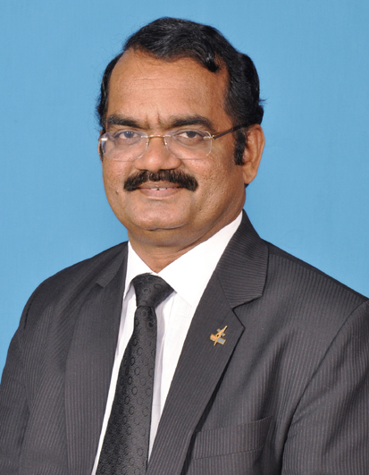
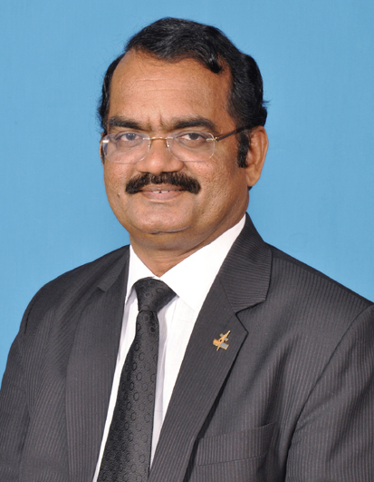
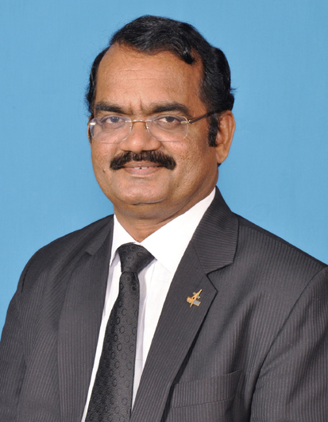

My Inspiration
click on these pics to view my inspiration
,_Dr._K._Sivan_addressing_a_press_conference_on_the_occasion_of_‘Lunar_Orbit_Insertion_of_Chandrayaan-2_Mission’,_in_Bengaluru_on_August_20,.jpg) 

Hobbies are a great way to relax and unwind. These are done after a stressful day at school, college, or office. There is no rule of what can be termed as a hobby. It could be anything, from stamp collection to painting, or even travelling. Anything can be considered as a hobby if it relaxes your mind.
My favorite hobby is Programming. I do a lot of work in it. I have a destiny to become a Rocket Programer/Aerospace Enginnering. So i kept my Hobby as this. It relaxes my stressful mind after studying from school. From that i have made a bot called Hierol. It is an AI. I have also made a server which he manages all settings of my server. And also i am working on my personal website, Amreshweb. Other than that i have also a hobby of reading. I read Encyclopedia of space in order to be my destiny.The programming teaches us Discipline, Concentration on a particular thing. So this is my hobby of my life. THANK YOU üëçüëç.
